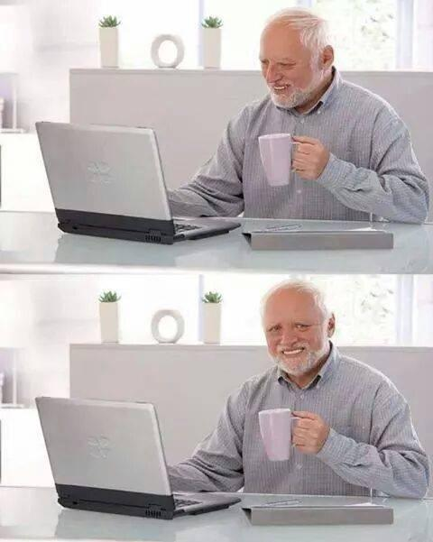

For at lave links bruger man anchor tagget [a], der kan laves relative links, som linker til et sted på samme domæne, og der kan laves absolutte links, som linker til et andet domæne.
Absolutte links refererer til et bestemt sted på domæner, såsom dette link til Google. Det virker kun som et absolut link fordi der er [https://] foran, ellers ville det prøve at finde [www.google.com] på samme "drev" som siden man er på selv. Det ville ikke kunne virke hvis man har siden lokalt gemt på sin PC, f.eks.
Relative links refererer til et sted på samme domæne og kræver ikke at bruge [https://]. Her er et eksempel på et relativt link.
Der er også forskellige måder at lave relative links der fører til mapper inden den side man er på. Den ene måde er at gå til hovedmappen ved at bruge "/" i starten af linket. Den anden måde er at bruge "../", som fører til mappen lige inden den side man er på. Det betyder at man virkelig skal vide hvor man er henne, og hvor man skal hen med linket.
Billeder bruger tagget [img] for at blive vist. Man kan bruge både relative og absolutte refereringer af et billede. Men i stedet for at bruge [href] til at referere til billedet bruger man [src]. Hvis man bruger [alt] i ens billed kan man beskrive hvad der er i billedet, så søgemaskiner også kan vide om et billede kan være relevant til billedsøgning, såvel som at gøre det muligt for text-to-speech programmer at sige hvad der er. Man kan også give et billede tekst på sig når man holder musen over den ved at bruge [title].
